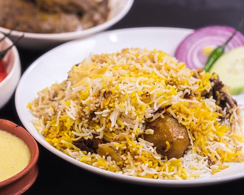

biryani

Biryani is a mixed rice dish originating among the Muslims of the Indian subcontinent. It is made with Indian spices, rice, and usually some type of meat or in some cases without any meat, and sometimes, in addition, eggs and potatoes.
Ingredients:
- Chicken
- Aromatics
- Spices
- Rice
Steps:
- To marinate the chicken for the biryani, combine the vegetable oil, garlic, ginger, chili peppers, mint, cilantro, garam masala, cinnamon and salt in a large bowl and stir together. Add the chicken pieces and toss together making sure the chicken is thoroughly coated in the marinade. Allow the chicken to marinate for at least 1 hour or up to overnight.
- In a pot wide enough to hold the chicken in a single layer, add the ghee and onions and saute the onions until they are well caramelized (15-20 minutes). Transfer the caramelized onions to a bowl and set aside.
- While the onions caramelize, prepare the rice by washing in a strainer under cold running water until the water runs clear.
- To par-boil the rice, add the water, salt, cardamom, cumin and bay leaf to a pot and bring to a boil. Add the rice and boil for 7 minutes. Drain the rice, reserving 1 cup of the liquid.
- Without opening the lid, set the timer for another 10 minutes to steam the biryani.
Mix the Chicken Biryani together and then transfer to a serving platter. Garnish with fresh cilantro and serve.